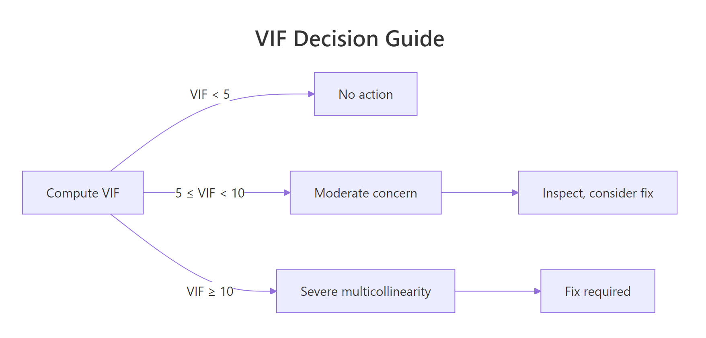
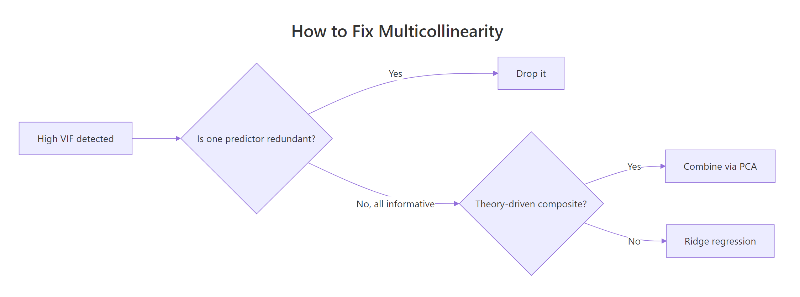
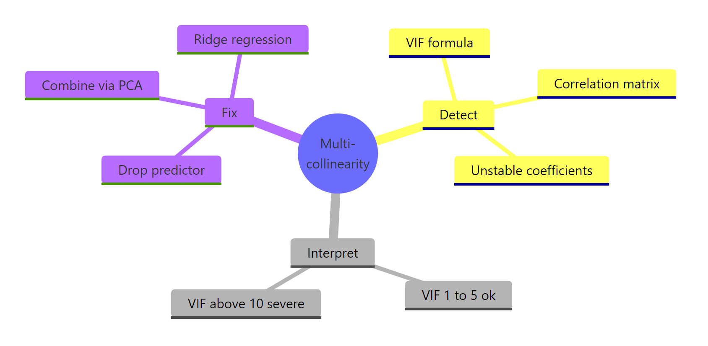

Multicollinearity in R: Detect It With VIF Before It Corrupts Your Coefficients
Multicollinearity happens when two or more predictors in a regression are highly correlated, which inflates standard errors and makes coefficients swing wildly. You detect it in R with the Variance Inflation Factor (VIF) and fix it by dropping a redundant predictor, combining the correlated block with PCA, or switching to ridge regression.
What does multicollinearity do to your regression?
Multicollinearity is easiest to feel before it is defined. When two predictors measure nearly the same thing, the regression can't tell which one deserves credit, so the estimated coefficients swing wildly when you add or remove variables. Let's fit two models on mtcars that differ by a single predictor and watch the other coefficients lurch.
Dropping disp barely moved hp or wt here, which is a sign disp added almost nothing the other two didn't already carry. In a badly collinear model you'd see the opposite, coefficients flipping sign or doubling in magnitude when you wiggle the predictor list. That instability is the symptom VIF is built to catch. The VIF turns "how much does my coefficient depend on which other predictors are present?" into a single number per predictor.
Try it: Add cyl to the full model above and compare the hp, wt, and disp coefficients to model_full. Which ones shift the most?
Click to reveal solution
Explanation: The hp coefficient roughly halved (from -0.031 to -0.018) and disp flipped sign (0.000 → 0.012). That jumpiness is the coefficient instability multicollinearity causes.
How do you compute VIF in R?
VIF formalizes that instability with one clean formula. For each predictor, it asks: how well can the OTHER predictors already predict this one? If the others explain almost all of it, this predictor carries little new information, and its VIF is large. The definition is:
$$\text{VIF}_j = \frac{1}{1 - R_j^2}$$
Where:
- $\text{VIF}_j$ = variance inflation factor for predictor $j$
- $R_j^2$ = $R^2$ from regressing predictor $j$ on every OTHER predictor
We'll build a tiny compute_vif() in base R so the formula itself is transparent. It runs in your browser and works for any fitted lm.
disp has a VIF of 7.32, which means the other predictors explain 86% of its variation, that's what made it redundant in the first section. wt is approaching the concern threshold, and hp is fine. In local R you'd call car::vif(model_full) and get the same numbers; we wrote the function ourselves so the math is explicit and so everything runs in the browser.
car::vif() is the production tool. On your laptop, library(car); vif(model_full) returns the same values and handles extras (GVIF for factors, adjustments for multi-df terms). Use our compute_vif() to understand what car::vif() is doing; use car::vif() in production code.Try it: Fit mpg ~ wt + qsec + am on mtcars and compute VIF. Is any value above 5?
Click to reveal solution
Explanation: All VIFs are under 2.6, so this trio of predictors is fine, no meaningful collinearity problem.
How do you interpret VIF values?
VIF maps directly to how much your standard errors are inflated. A VIF of 1 means the predictor is independent of every other predictor. A VIF of 4 means the standard error is 2× what it would be without collinearity, because the inflation factor is $\sqrt{\text{VIF}}$. Let's confirm the formula by computing one VIF by hand.
The auxiliary regression says hp + wt together explain 86.4% of the variation in disp, which gives $1/(1-0.864) = 7.32$, the same number compute_vif() returned in the previous section. That is literally all VIF is: the auxiliary $R^2$ rescaled so small values are good. It's not the correlation between two predictors in isolation; it's how well the whole rest of the model predicts one predictor.

Figure 1: VIF thresholds and the action each one triggers.
car::vif() reports a GVIF (generalized VIF) plus a GVIF^(1/(2Df)) column, compare the latter to the usual thresholds (5 ≈ 2.24, 10 ≈ 3.16 on the adjusted scale). Our base-R compute_vif() treats each dummy separately, which is fine for binary factors but oversimplifies for multi-level ones.Try it: Compute VIF for wt manually by regressing it on hp + disp. Confirm it matches the value compute_vif() returned.
Click to reveal solution
Explanation: hp and disp together explain roughly 79% of the variation in wt, giving VIF = 4.85, exactly what compute_vif() reported.
How do you visualize correlated predictors?
Numbers are useful; pictures are faster. Two plots do most of the work: a correlation heatmap of the predictor matrix tells you what is correlated with what, and a bar chart of VIF values with threshold lines tells you how bad it is. We'll build both in base R + ggplot2 so they run in the browser.
Red cells are strong positive correlations, blue cells are strong negative. The block of disp, cyl, hp, and wt lights up in red-orange, they're all proxies for engine size and vehicle mass. Any regression using more than one of them is going to show high VIFs.
The bar for disp (VIF 7.32) sits above the orange line at 5, which is the "start paying attention" threshold. Nothing crosses 10 yet, but the model is clearly leaning on overlapping information.
Try it: Build a VIF bar chart for mpg ~ hp + disp + wt + am. Which predictor has the largest VIF?
Click to reveal solution
Explanation: disp is still the worst offender at 7.42, and wt has crept above the 5-line now that am is in the model.
How do you fix multicollinearity?
Once VIF flags a problem, you have three tools, ordered from simplest to most elaborate. Drop the redundant predictor if one is clearly duplicative. Combine the correlated block into one index with PCA if they're all substantively meaningful. Or switch to ridge regression to keep every predictor while stabilizing the estimates through shrinkage.

Figure 2: Choosing between drop, combine, and ridge.
Fix 1: Drop the highest-VIF predictor
The blunt fix. It works when one of the correlated predictors is clearly the least informative, for instance, disp (engine size) is largely captured by hp + wt anyway.
Both VIFs dropped to 1.77, essentially no inflation. The mpg coefficients from this model are now interpretable without worrying that they're proxies for each other.
Fix 2: Combine correlated predictors with PCA
When every predictor in the collinear block matters theoretically, extract their shared signal into a single component with prcomp() and use that component as the regressor.
PC1 alone explains 88.4% of the variance in the four correlated predictors, so it's a faithful summary of the "engine size / mass" factor. Using it as one predictor (plus qsec) gives a model with zero multicollinearity by construction, because there's only one predictor in that axis. The tradeoff: you lose the ability to say "a one-unit increase in hp changes mpg by X", your coefficient now describes a composite index instead.
Fix 3: Ridge regression
Ridge regression (glmnet) adds a penalty that shrinks coefficients toward zero, which absorbs the extra variance collinearity creates. It lets you keep every predictor in the model.
glmnet isn't available in the browser. The ridge block above is shown as code you can paste into local RStudio; it won't execute in the interactive runtime on this page. The coefficients are all in the same direction (negative, higher values reduce mpg) and much stabler than the raw lm() estimates, because the L2 penalty dampens coefficient swings.lambda tuning, and ridge-vs-lasso tradeoffs, see Ridge Regression With R. Ridge is the standard answer when dropping or combining would throw away information you actually need.Try it: Drop hp from model_full (not disp) and recompute VIF. Does the collinearity resolve?
Click to reveal solution
Explanation: Both VIFs drop to about 4.3, under the threshold of 5 but higher than when we dropped disp (which gave 1.77). disp was the more redundant predictor, so dropping it was the cleaner fix.
Practice Exercises
Exercise 1: VIF on airquality
Using airquality, fit Ozone ~ Solar.R + Wind + Temp + Day and compute VIF. Which predictor (if any) is the biggest multicollinearity concern? Save the VIF vector as my_vif_aq.
Click to reveal solution
Explanation: Every VIF is well under 2, so airquality has essentially no multicollinearity, these four meteorological predictors measure genuinely different things.
Exercise 2: Iterative VIF pruning
Using mtcars, fit the saturated model mpg ~ cyl + disp + hp + drat + wt + qsec + vs + am + gear + carb. Use compute_vif() to find the highest-VIF predictor, drop it, and refit. Repeat until all VIFs are below 5. Save the final VIF vector as my_final_vif.
Click to reveal solution
Explanation: The loop drops the worst VIF predictor each pass. Starting from 10 predictors, it trims disp, cyl, wt, and hp (the engine-size block) before every remaining VIF is below 5.
Complete Example
Here is the end-to-end workflow on mtcars: fit the saturated model, diagnose, visualize, fix, and confirm.
The saturated model's R² was 0.869; the cleaned model's is 0.853. We lost 1.6 percentage points of variance explained in exchange for every VIF below 3, a trade almost always worth making if you care about interpreting coefficients. The final model has no predictor whose standard error is inflated by more than ~70% (√2.94 ≈ 1.71), so you can actually trust the p-values.
Summary
| Step | Action |
|---|---|
| Symptom | Coefficients swing when predictors are added or removed |
| Detect | Build compute_vif() or call car::vif(model) |
| Thresholds | VIF < 5 fine, 5-10 concerning, ≥ 10 severe |
| Visualize | Correlation heatmap + VIF bar chart with threshold lines |
| Fix 1 | Drop the most redundant predictor |
| Fix 2 | Combine correlated predictors with prcomp() (PCA) |
| Fix 3 | Ridge regression (glmnet, shrinks coefficients) |

Figure 3: Detect, interpret, and fix at a glance.
References
- Fox, J. & Weisberg, S. An R Companion to Applied Regression, 3rd Edition. SAGE (2019). Link
- car package,
vif()reference. Link - Kutner, Nachtsheim & Neter. Applied Linear Statistical Models, 5th Ed. McGraw-Hill (2004). Chapter 10.
- Harrell, F. E. Regression Modeling Strategies, 2nd Edition. Springer (2015). Chapter 4.
- Hoerl, A. & Kennard, R. "Ridge Regression: Biased Estimation for Nonorthogonal Problems." Technometrics, 12(1), 55-67 (1970).
- R base stats,
lm()andprcomp()documentation. Link - James, Witten, Hastie, Tibshirani. An Introduction to Statistical Learning, 2nd Ed. Chapter 6 (Shrinkage Methods). Link
Continue Learning
- Linear Regression in R, the foundation on which every VIF calculation depends.
- Ridge Regression With R, the full walkthrough of Fix 3, with cross-validation and lambda tuning.
- Correlation Matrix Plot in R, more advanced visualizations for the correlation matrix we built in Section 4.